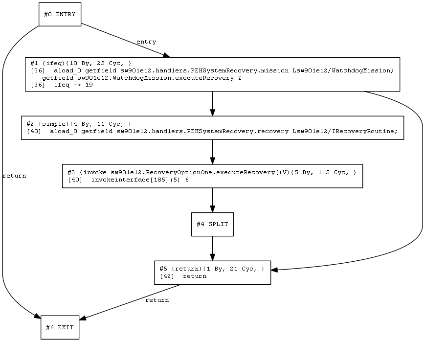
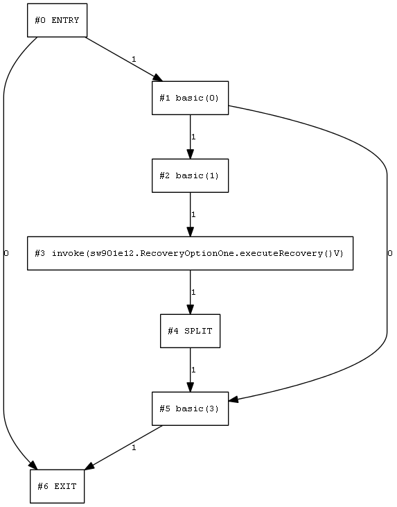

Detailed report for sw901e12.handlers.PEHSystemRecovery.handleAsyncEvent()V
CFG
Stats
#nodes: 5
number of words: 5
Graph

WCET_CallString.EMPTY,ALWAYS_MISS
Stats
all-methods-fit-in-cache: true
WCET: 43355 (local: 172,cache: 14,non-local: 43169)
mode: AnalysisContextLocal [callstring=CallString.EMPTY, mode=ALWAYS_MISS]
Graph

DFA results